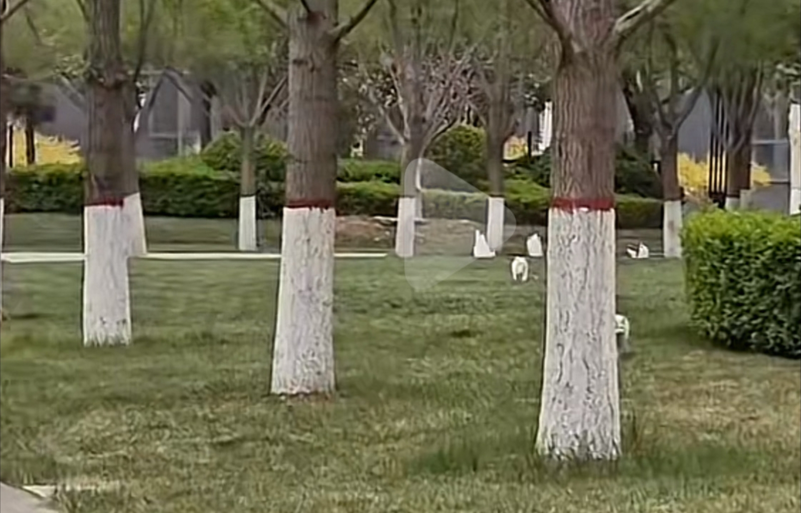
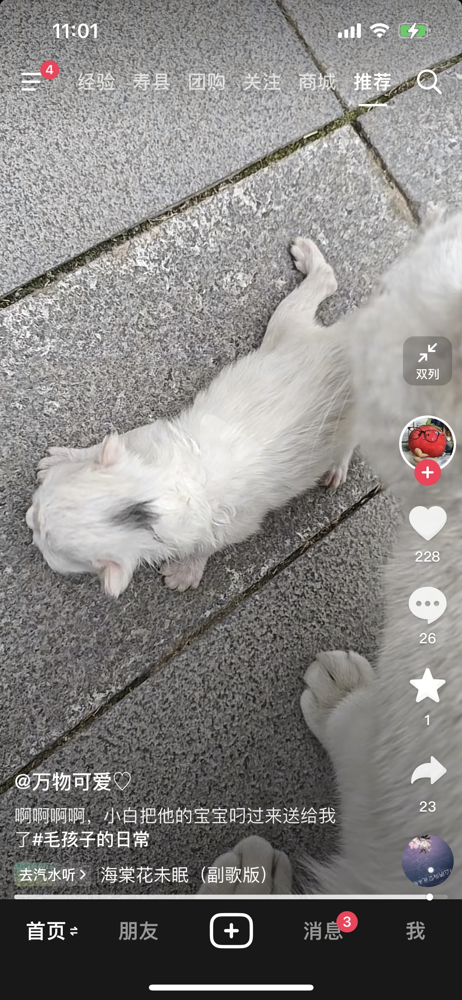
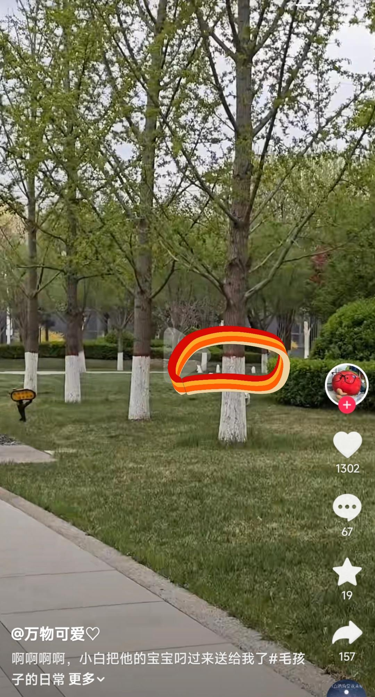
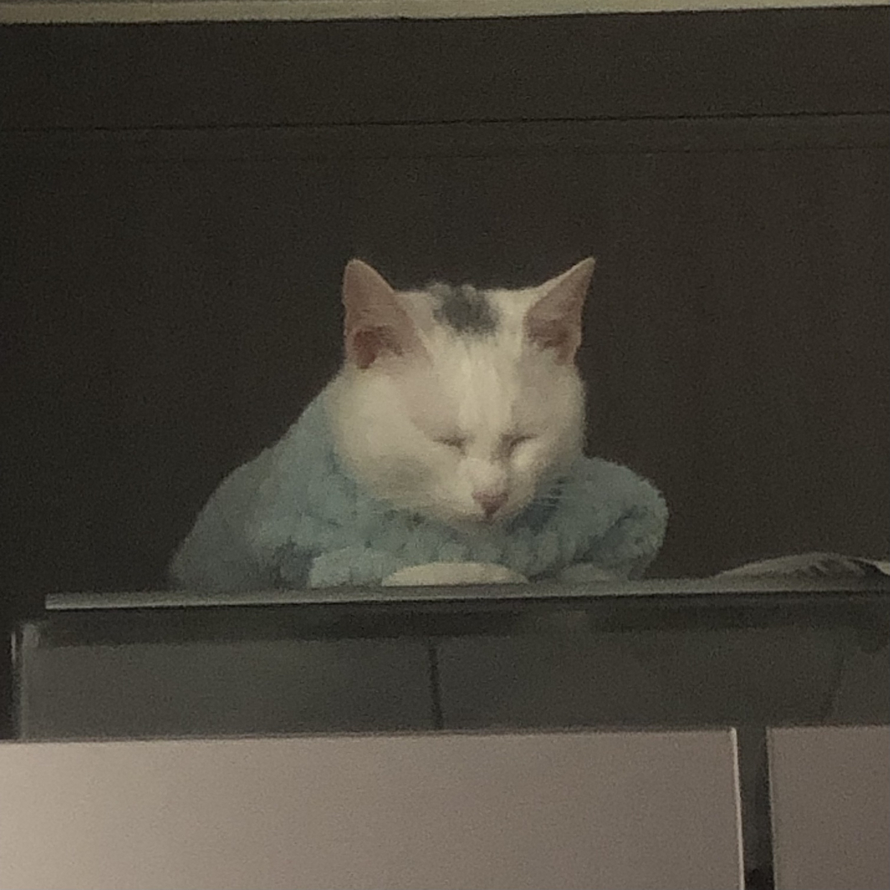
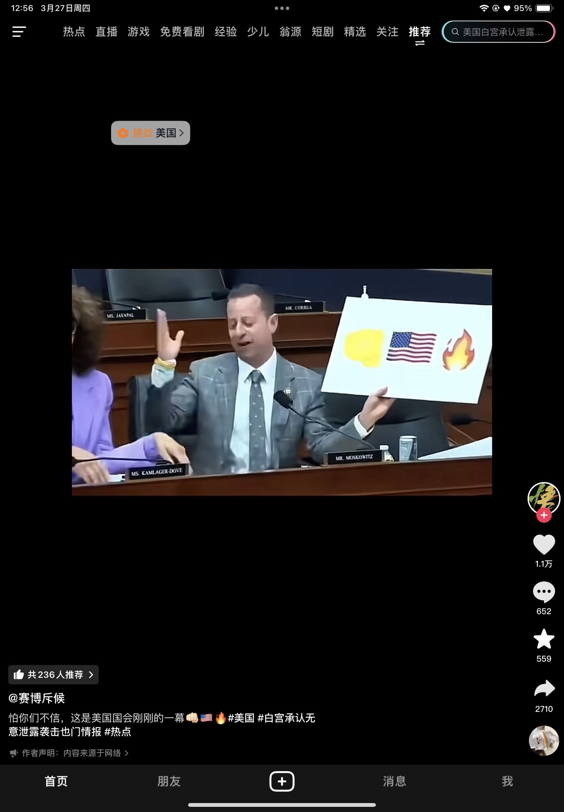
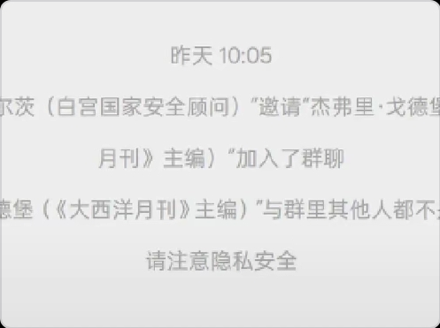
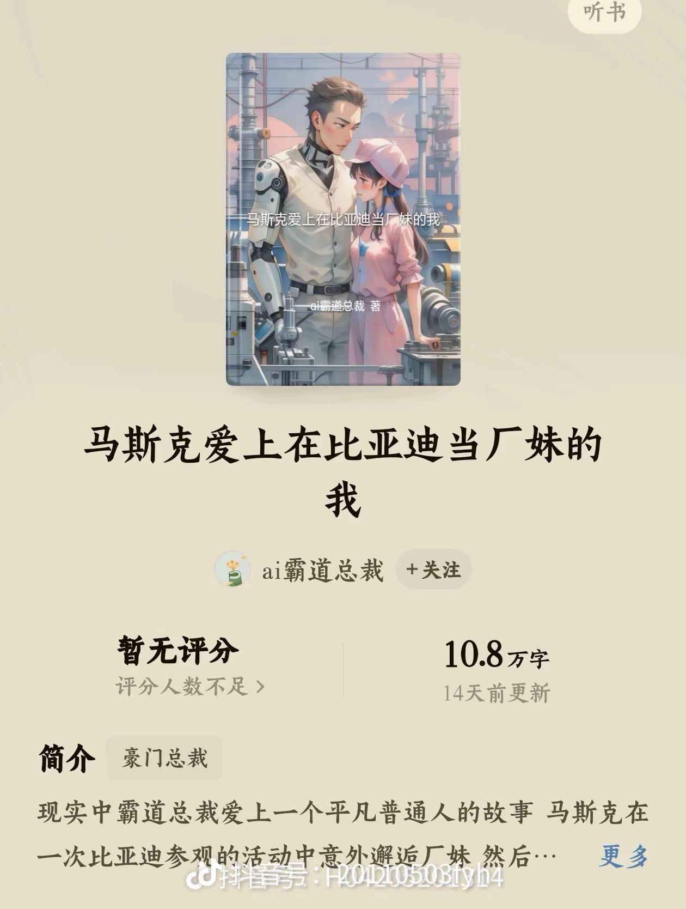
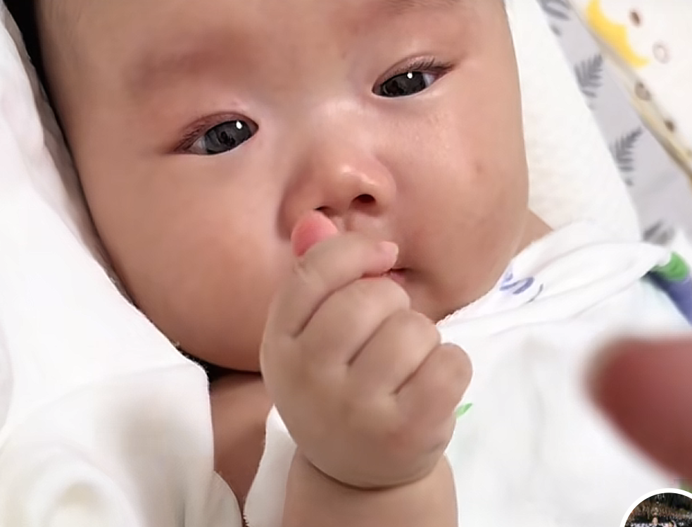
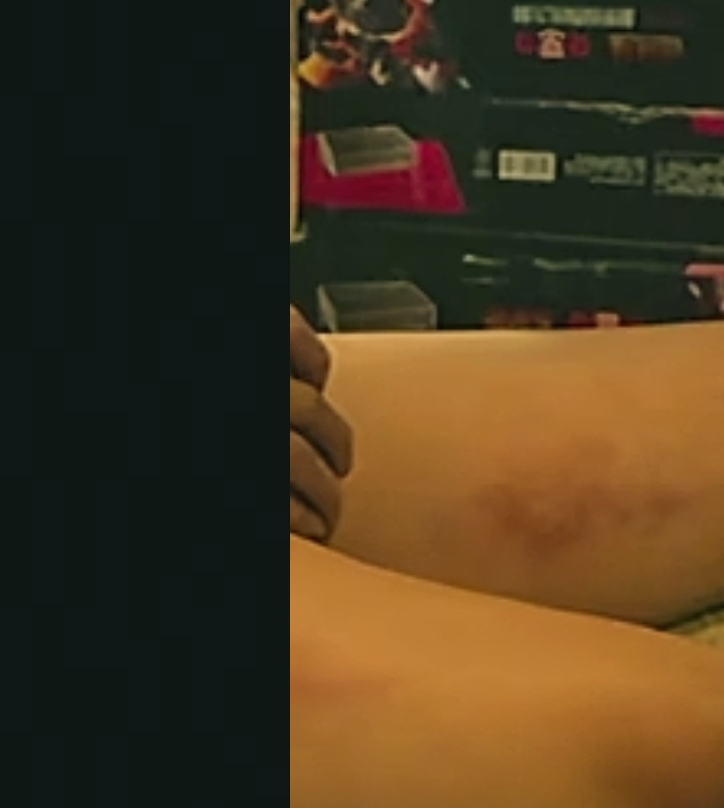
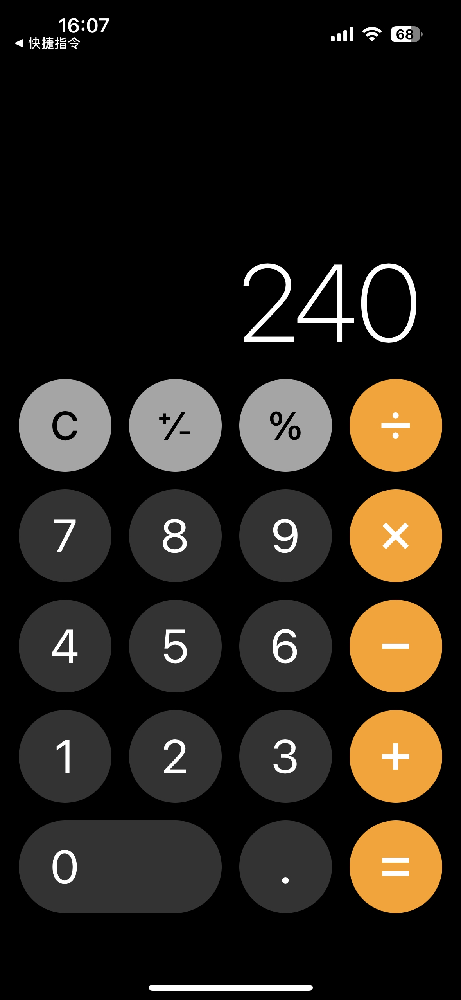

要想瘦到目标体重 必须低于目标体重5斤 因为正常吃饭会储存3斤水 还有2斤食物
怎么，你那么有把握的婚姻不幸福吗 这句话我真的记了好久好久[流泪][流泪]
采访一下大家，看过这部剧，都多大了[泣不成声]
虽然大家吐槽海陆有点壮，但放在今天再看，海陆本身的力量感赋予了夏紫薇新的灵魂，只有她有力量，我才相信她是带着金锁从济南千里迢迢来这里寻亲的紫薇
我看的时候只觉得他们好多人三观很正，感觉不像琼瑶的风格[捂脸]
经典无非就是先入为主罢了，比起老版我更喜欢新版的自由热烈，每个人物的鲜活。
新版的三观很正啊，敢爱敢恨，轰轰烈烈。你不喜欢，有的人喜欢，新版有新版的粉丝，老板有老板的粉丝没必要吵
这玩意儿就得小时候看，长大了再看，尤其是萧剑带走晴儿，满脑子想的都是，那可是北京户口啊，她竟然放弃了北京户口[捂脸][捂脸][捂脸]
这题我会，去年刚刚离婚的时候身无分文，问我爸借了六百，没敢告诉父母自己离婚了，租房子五百，押金还是跟老板说了又说才同意押了一百，住的地方有了，吃的什么都没有，喝的自来水，把东西收拾好了就出去找临时工做，第一天没找到，饿了一天只是喝来点自来水，到了晚上饿得睡不着，第二天早上又出去找工作，遇到了一个年龄跟我差不多的人也在找工作，我就跟她搭伴一起，到了中午她问我要不要跟她回家吃饭了再出来一起找工作，我立马就说好，因为我真的饿了，去她家吃饭的时候我没敢多吃，但是盛饭的时候我压了一下饭又加多了一点，就吃了一碗，我怕她笑话我，但我吃好了去卫生间偷偷的哭了几分钟才出来，下午我们一起出去找到了工作，从哪后我就把她当成了我的贵人，恩人。没领工资前我隔三差五的就会去她家蹭饭，中间也跟我爸又拿了一百块钱买了三件泡面，现在熬过来了，再看到这种视频就会想起曾经的心酸，忍不住落泪[快哭了][快哭了]
借遍了，亲戚朋友都借不到几十块钱，要从自己身上找原因[捂脸]
有的不是穷！而是失信了
如果我遇到、我会帮他付掉、在带他吃炖饭、人都有困难的时候…..
问政云南，十辆大巴都拉不完
冷知识，昆明是全国唯一一个没有市长的省会[看]
云南的官 滇池的水
红河泸西，离昆明很近的一个小县城，一个高中建了十多年[调皮]
我还以为七大姑八大姨都来了那 
她一定挑了好久[泣不成声]
两只猫看到你都一下把尾巴竖起来了[泣不成声][泣不成声]
养了吗养了吗，养了就起号，我要关注，买货！
竖尾巴，证明你天天喂它，它也认得你，别问我咋知道，我就是做救助的
哈哈哈 头顶一撮小黑毛 好搞笑 
这一定是它最得意的孩子
猫尾巴立起来是不是已认人了
以为这仨也是[尬笑][尬笑][尬笑][尬笑] 
我说那三怎么一直翻滚啊
她们送都会送自己最好的孩子
长大 
白猫在野外容易受欺负，她专门挑了白色的送你
这个表情给我整笑了 👊🇺🇸🔥
笑的我不行了 
这…你让我咋信，我小说这么写都被骂给反派强行降智
别说，还真别说，环球网发的我都以为是谣言划过去了，直到央视也发了，我才划回去[憨笑]
打个仗拉个群就决定了吗[石化]
聊天记录啊，这下不得不信了[捂脸][捂脸][捂脸]没想到这句话成真了
直接写本小说《误入白宫聊天群》
他们需要微信[愉快] 
不如用微信，还能提醒他与其他成员不是好友，谨防信息泄露[微笑]
这玩意比《修真聊天群》都离谱啊…… 这要发到起点，作者得被喷到退圈。。
真的就是他们随便一句话就决定了多少人的生死
不是，这新闻是我看三遍都觉得离谱的事，就强行降智，它还是真事[尬笑]
政治家几句话就能决定一群人甚至一个国家生死 诶[捂脸]
那这个应该也不是太离谱 
他们没有内部软件吗？这种事是可以在商用软件讨论的吗？？[九转大肠]
我一直以为美国在演戏，你们现在和我说，这是正儿八经的，偶……买嘎的
啊？！啊…他们聊工作也是拉人新建一个工作群进行群聊啊，那他们的群估计跟咱一样也挺多啊！[二哈][二哈]
以后要是进了什么修真聊天群，我铁定坚信[看]
这玩意当小说剧情写出来都要被人追着喷，但现实明显比小说更魔幻[捂脸][捂脸]
小命就一条，各行各业都想要
打篮球节奏好的一般跳舞也好，高荣除外[大笑]
我的丝袜小姨
自从技术进步 技能明显退步了
真是擦边看多了，下意识以为要脱了，结果是敲架子鼓啊。。。
擦边看多了，突然看到小清新的感觉心灵被净化了
草民今日才艺，是否能入各位大人的眼呢
这就是少年感哈
[泣不成声]谁懂那种感觉，就很帅[泣不成声][泣不成声][泣不成声]
在床上趴着呢，啪一声给我干地上了 [微笑]
听我一句劝 你要是想宣传架子鼓 不能穿太严实 [憨笑][憨笑]
你别说，擦边的遇到的多了，看见这种纯氛围的也是别有一番风味。你等一下，我下一个脑内随笔就套你这个氛围[赞]
感觉会火留个逗号，证明自己是最早的一批人[看]
海狗:望咩啊 死鬼佬
我就说美国挨着广东，朋友不信[宕机]
海狗：骑马过海啊[看]
海狗：on9
你们是怎么分清海狗海豹海象的？
谢谢，继续努力💪
什么子宫，链接发过来
他真的会耶[比心] 
宝宝喝什么牌子的奶粉，我想买一罐给自己喝喝。
超聪明呀
就是很聪明啊，我侄子五个月了都听不懂人话[泪奔]
这这这，正常吗[捂脸]也太聪明了吧
这人还挺害羞的，都死了还知道捂住尊严[暗中观察] 
第一眼看成哪个监管的技能了[黑脸]
左耳靠近心脏，情话要说给左耳听
谈恋爱的软广吗[黑脸]
瞳孔放大是真的，还会冒光，一眼就能看出来
前面是我喜欢的人，看回照片才发现我当时眼睛里真的全都是他[流泪]
跑完400去触碰： 
怎么控制住不看喜欢的人[宕机]在是碰面的时候怎么表现的自然一些
暧昧对象和他的异性朋友拍手[愉快][赞]
Read more: